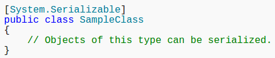

Attributes add metadata to your program. Attributes can accept arguments in the same way as methods and properties. Your program can examine its own metadata or the metadata in other programs by using reflection.
In this example, the SerializableAttribute attribute is used to apply a specific characteristic to a class:

The following code example shows how to declare System.ObsoleteAttribute, which marks code as obsolete. The string "Will be removed in next version" is passed to the attribute. This attribute causes a compiler warning that displays the passed string when code that the attribute describes is called.